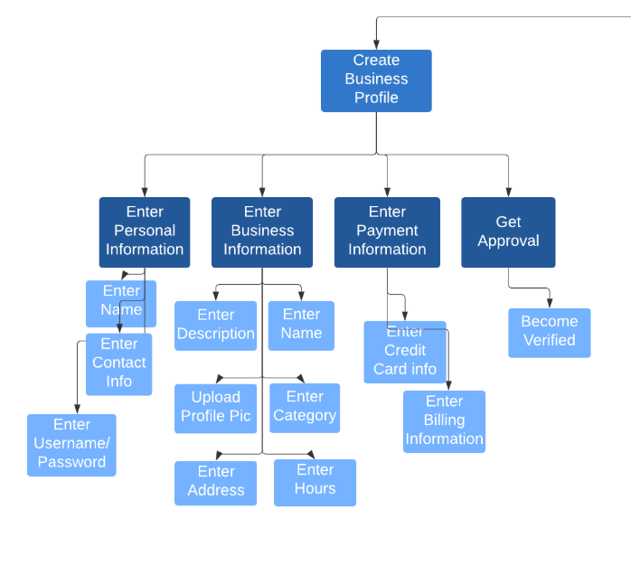
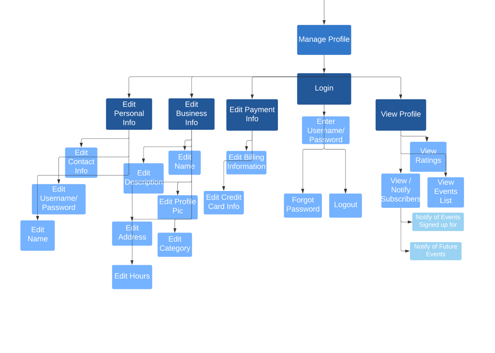
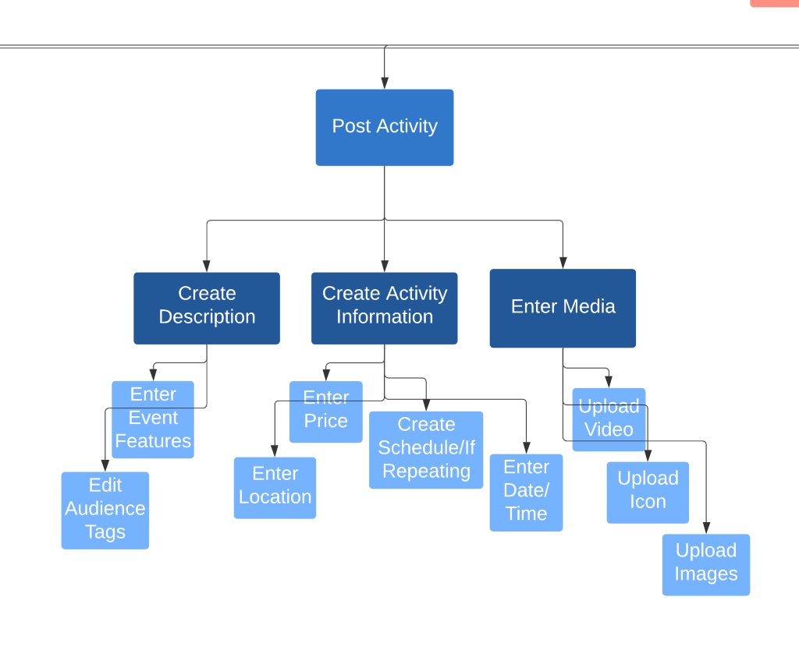
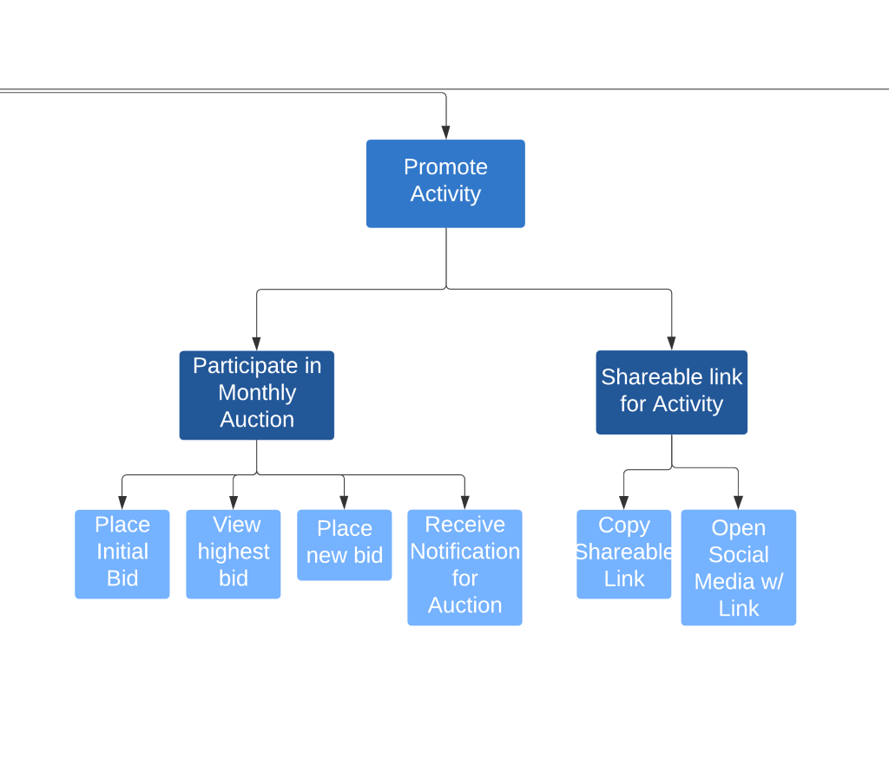

Task analysis, or hierarchical task analysis, “is a task analysis method that provides an extensive description of all the necessary tasks to achieve a main goal in a hierarchical structure” [4]. It involves the recognition of the prime elements of given tasks in order to understand the skills that are necessary to adequately complete each task. Task analysis uses what is called a top-down approach. High-level goals are disintegrated into tasks, and tasks into subtasks, for the purpose of understanding exactly what each task requires. Essentially, “Task analysis identifies the actions and cognitive processes required for a user to complete a task or achieve a particular goal” [1].
According to Production Ergonomics, hierarchical task analysis involves organizing goals, tasks and other elements into a tree, consisting of the following elements, ordered from top to bottom: goal, tasks, subtasks, operation, device, and plan [2].
Task Analysis provides many different advantages. It “offers a comprehensive look at every aspect of the ... development process.” [3] This technique is “useful for representing design analysis, integration with business models and model of requirements change.” [4] Task Analysis is a very useful technique, as we can see the pros heavily outweigh the cons.
There are two main disadvantages to task analysis. First, a certain level of detail is required in a task analysis which, in turn, requires a lot of detail for low level tasks. [4] Second, “the task analysis requires a lot of effort as compared to an interview.” [4] It is because of the level of detail needed that task analysis is more time consuming than other elicitation techniques.
We applied the task analysis technique to our project by outlining a plan that would allow us to create a hierarchical task analysis that specified each of the tasks, subtasks, and other elements we needed in order to accomplish our goals for the project. By doing this, the hierarchical task analysis we created was able to better help us comprehend each of the tasks and made it less likely for us to miss any necessary steps needed throughout the process.
We began by defining the purpose and boundaries of our Task Analysis [2]. From this, we began defining and separating end goals for business owners, until we had all high-level goals listed. Subsequent subtasks and detailed sequences were then composed to provide a plan for all outcomes and events. This provided a top-down view of the application requirements.
The purpose of Hierarchical Task Analysis is to break down a high level task into manageable pieces. According to Production Ergonomics, hierarchical task analysis involves organizing goals, tasks and other elements into a tree, consisting of the following elements, ordered from top to bottom: goal, tasks, subtasks, operation, device, and plan [5]. Task Analysis allows users to understand how a high level task will be accomplished in detail.
The stakeholder is Jordan Hamblin. Our Customers are business owners. Businesses who post on the app are the ones funding it.
The total time to research, plan, and report on this elicitation technique will be less than one week. The planning document will be completed by Tuesday, May 5th. The report will be drafted by Friday afternoon on May 8th, so it can be reviewed by the stakeholder. The final revised report will be completed by Saturday afternoon, May 9th.
For our task analysis, we will not be collecting any new data. We will be brainstorming how to break down a task into smaller, easier to manage sub-tasks by analyzing and applying previously collected data.
There are several components that make up a hierarchical task analysis. In order to make sure the hierarchy is made correctly, we will plan for the creation of each of the elements in the hierarchy. These elements are: The Goal, Tasks, Subtasks, Operations, Devices, and Plan [6].
For this task analysis, we chose to strictly focus on business owners. Thus, the high-level goal for this analysis is to acquire more customers for businesses. That means each task listed should focus on helping businesses reach more people. While developing our hierarchy, we will keep this goal in mind and seek to separate it into more manageable tasks.
From the main goal, 4-8 tasks will be chosen. Tasks are actions that need to be taken to achieve a goal. Each task will be split into sub-tasks which are components of a task. Each sub-task will be deconstructed further into operations.
Tasks and subtasks will be determined by looking at the data gathered in last week’s elicitation reports. We will analyze the data gathered by each team and look for tasks that businesses will need to complete in order to achieve the goal of acquiring more customers. As subtasks are determined, they will be divided into operations.
An operation should be a single, simple to perform action. It shouldn’t take too much effort on the part of the person performing the operation. For our project, this might look like designing or coding a small piece of the application. For a user, this might be clicking a certain button or filling out a certain form.
Devices are tools that will be used to accomplish tasks or subtasks. If one of our subtasks was to get users directions to an event, the device could describe the means of using GPS
The plan element refers to the order in which the tasks in the hierarchy should be performed. This can include numbering the tasks in the order in which they should be performed and marking which tasks should be repeated given certain conditions.
After the hierarchy has been established, our team will discuss how narrow or broad each task, subtask, and operation should be explored through the chart. The decisions will be recorded as they are discussed. Team members will then be assigned to begin drafting the tasks, “until all actions and events are described” and documented [6].
The structure will be created through Lucidchart, after which the drafted descriptions and features will be placed on the chart in their respective spots. This information will then be sent to the sponsor for the review. This will provide feedback on the information that has been gathered.
The web tool Lucidchart will be used to design our structure diagram.
Upon completion of the HTA chart, the most important features of our application will naturally rise to our foremost attention. Unnecessary features will naturally be excluded from our attention, since only subtasks and operations which lead to the end goal will be kept.
After using the chart to note application necessities, a list will be compiled representing these discoveries. This list will be submitted in the conclusion of the final report. It will clearly and concisely state required features, integrations, and requirements for the application.
Below are selected parts of our task analysis diagram. Each section starts with a task meant to help achieve the goal of helping businesses acquire more customers. The full diagram with all six tasks can be viewed here. The main goal is in red, tasks in blue, subtasks in dark blue, and operations in light blue. Some operations are broken down further into lighter blue parts.
Creating a business profile is the first step a business owner needs to take in order to find more customers on the local activity app. Creating a business account involves entering personal information for the person creating the account, entering information about the business, entering payment information to be used in monthly bids, and waiting for the account to be approved. The approval step is important to ensure that these accounts belong to actual businesses.
After a business profile is created, there needs to be a way to manage the account. A business user should be able to edit all of the information entered when the account was created.
After creating an account, a business needs to post an activity for customers to see. This involves entering a description and other information, as well as any relevant media.
One of the most important aspects of this app is business’ ability to promote their activities by bidding for higher spots on the activity list. The subtasks (dark blue) and operations (light blue) below describe how this is done.
There are a few items worth noting from the structure of our chart. First is that the number one goal among business owners will always be acquiring customers. If they are unable to acquire customers through the application, they will no longer use the service or even sign up in the first place.
Every Task (dark blue) stemming from this single Goal (red) is essential for the business to achieve that goal. For example, without creating a profile, businesses will not be able to accurately display themselves to potential customers.
While the list of features is not exhaustive, we believe that every essential feature has been listed. Any additional “nice to have” features have been left out purposefully, upon conclusion that they were non-essential.
For our technique, task analysis, we broke down the goal of acquiring businesses new customers. To do this, we began by splitting the goal into six tasks, creating a business profile, managing the profile, posting activities, managing activities, promoting activities, and viewing metrics. From there we further divided each task into sub-tasks. From each sub-task, we then evaluated operations that were necessary to accomplish that sub-task and eventually the overall goal.
By completing the task analysis, the most important aspects of the application came to the forefront of our attention. Unnecessary aspects became clearer and were excluded since they did not contribute to the high-level goal.
We conclude that every task in the structure chart would have sufficient reason to be included in the final application, since each task listed was decided with necessity as the final criterion. For practicality, those tasks will not be listed at this time, but they should be referenced in the appendix.